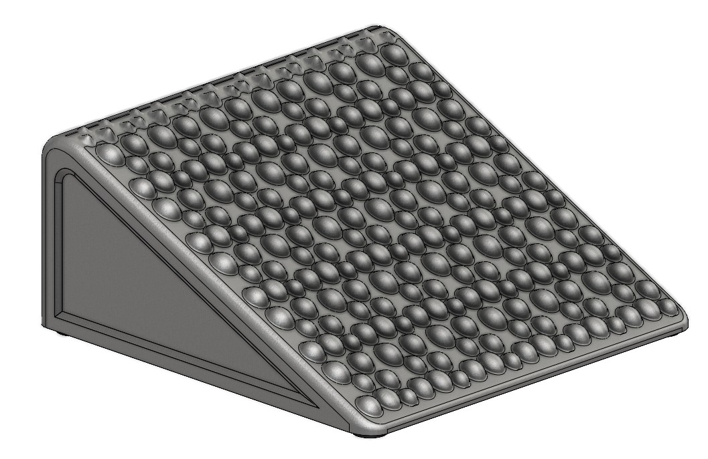
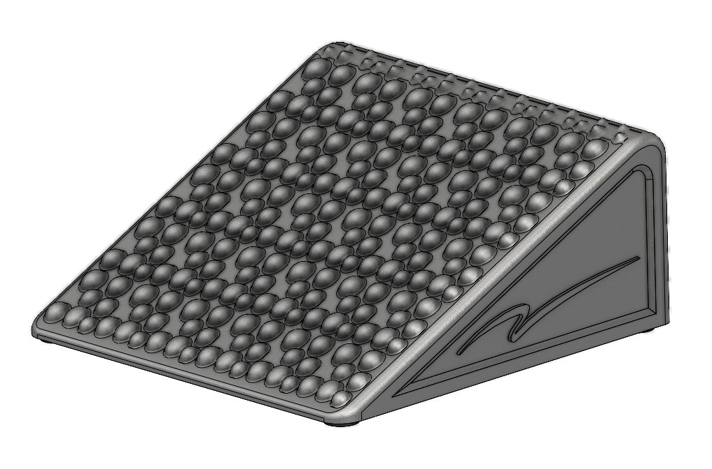
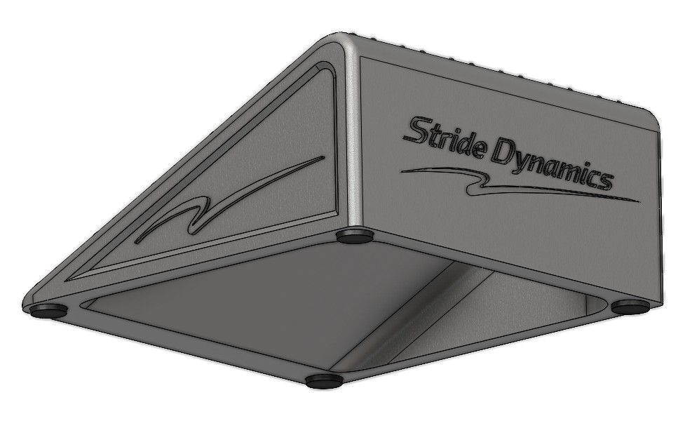

Fixed incline
A consistent angled platform helps make stretching and mobility sessions repeatable.
Engineered mobility tool
The Stride Dynamics Foot Wedge gives your lower leg a stable, repeatable platform for ankle mobility work, calf stretching, and foot-position awareness.
Currently produced in small batches while the design is refined.

The problem
Many people stretch casually, but the angle, footing, and repeatability are inconsistent. A dedicated wedge makes the movement easier to set up and easier to repeat.
This product is intentionally simple: a fixed angled surface with a textured contact pattern and broad stance area for everyday mobility work.
The design
The Foot Wedge is designed around practical use: a stable incline, tactile surface texture, rounded edges, and a compact footprint that fits into a daily routine.
A consistent angled platform helps make stretching and mobility sessions repeatable.
Raised surface features add tactile feedback and improve foot placement awareness.
Designed to be easy to keep near a desk, gym bag, training area, or recovery space.



Built by Stride Dynamics Lab
The goal is to create straightforward movement tools that solve specific setup problems. The Foot Wedge is the first public product focus while additional concepts remain under development and are not disclosed here.
Feedback & availability
Use the form to share feedback, ask questions, request more information, or inquire about purchasing/preordering a Foot Wedge when small-batch units are available.